Capture
Collect the right information from prospects, clients, and internal teams with structured forms and intake flows.

Venture DigitalFree MVP launch site
We design and build workflow automations that reduce repetitive work, improve lead response, and give owners a clearer operating system without starting with expensive software.
The problem
Most small service businesses do not need a giant AI transformation project. They need the obvious bottlenecks fixed first: lead capture, follow-up, reminders, onboarding, document collection, and internal task routing.
The expensive mistake is buying more software before mapping the workflow. Venture Digital starts with the process, then designs the minimum useful automation around it.
The solution
Collect the right information from prospects, clients, and internal teams with structured forms and intake flows.
Move information to the right person, spreadsheet, CRM, email, or task list so fewer details get lost.
Prepare faster follow-up, summaries, reminders, and next steps so your team can act with less friction.
Services preview
Website form routing, missed-lead follow-up, lead qualification, and appointment reminders.
Client onboarding, document collection, internal handoffs, and recurring email summaries.
FAQ planning, intake summarizers, proposal draft helpers, and support workflow design.
How it works
You complete the free automation audit so we can understand your business, software, bottlenecks, and urgency.
We identify the trigger, inputs, processing steps, outputs, approval points, and risks before building anything.
We build the simplest useful workflow first, test it with sample data, document it, and improve from there.
Example automations
When a new lead submits a form, create a structured record, send an internal alert, prepare a follow-up message, and track next action.
Collect required details, route documents, assign tasks, and send reminders so onboarding does not depend on memory.
Turn long form responses into a clear summary before a discovery call so the conversation starts sharper.
Compile updates from forms, spreadsheets, and notes into one operating summary for the owner or manager.
Early client offer
We are not using fake testimonials. Early clients get a tighter implementation offer while we document measurable workflow improvements.
Free automation audit
Submit the free audit form and we will review your answers for automation opportunities, package fit, and next steps.